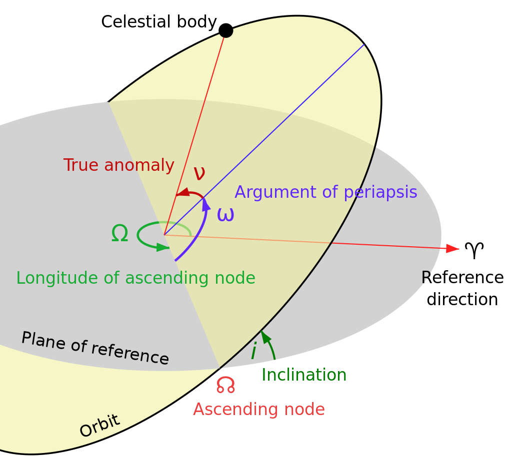

- Active satellite
- Inactive satellite

How we design an orbit
Keplerian elements, or orbital elements, are parameters that define celestial orbits. They include the semi-major
axis, eccentricity, inclination, Longitude of the ascending node, argument of perigee, and true anomaly,
based on Kepler's laws of orbital motion.

Semi-major Aixs (Unit: km, Range: > 6371)
This is the longest radius of an ellipse, which describes the size of the orbit.
Eccentricity (0-1)
This measures the shape of the orbit, specifically how much it deviates from a perfect circle. A circular orbit
has an eccentricity of 0, an elliptical orbit has an eccentricity between 0 and 1
Inclination (Unit: radians, Range: 0-3.14)
The inclination is the angle between the plane of the orbit and a reference plane. For objects orbiting the
Earth,the reference plane is usually the plane of the Earth's equator.
Longitude of the ascending node (Unit: degrees, Range: 0-6.28)
The ascending node is the point where the orbit crosses the reference plane going upwards (north). The
longitude of this point is measured from a reference direction, usually the direction to the vernal equinox.
Argument of periapsis (Unit: degrees, Range: 0-360)
The Argument of Periapsis (ω), depicted as a purple angle in the diagram, determines the ellipse's orientation
within the orbital plane. It's the angular measure from the ascending node to the periapsis, the point of closest
approach to the primary object.
True Anomaly (Unit: degrees, Range: 0-360)
The true anomaly is the angle from the periapsis to the object's current position.